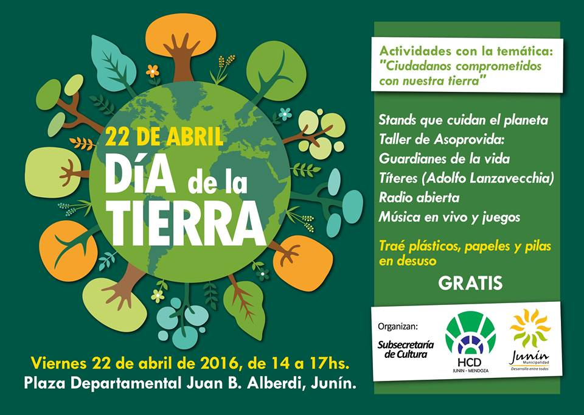

Dia internacional de la madre tierra 22 de abril


- 
Realizado por:
Guillermo Alberto Castillo Romero
4 "F"
Especialidad:
Programacion
Submodulo:
Desarrolla Aplicaciones Moviles
Docente
Lic.Jose Antonio Gomez Hernandez
4 "F"
Programacion
Desarrolla Aplicaciones Moviles
Lic.Jose Antonio Gomez Hernandez
El primero, porque este año coincide además con la firma del Acuerdo de París sobre el cambio climático. El acuerdo es el resultado del histórico COP21 que reunió en París a todos los países del mundo y tras el cual se comprometieron a trabajar para limitar el aumento de la temperatura global por debajo de los 2 grados centígrados, y dados los graves riesgos, a esforzarse por lograr que sea menos de 1,5 grados centígrados.
El origen de este día, celebrado mundialmente (aunque no en todas partes), se encuentra en Estados Unidos, durante los 70. Y está asociado, sin duda, a un nombre: Gaylord Nelson. La historia cuenta (a pesar de los curiosos rumores sobre Lenin) que fue este político quién aprovechó un miércoles para organizar una manifestación en defensa del medio ambiente y el ecologismo. Un momento muy estudiado y que venía cociéndose desde la década de los 60 debido a la creciente irresponsabilidad ambiental del gobierno de Estados Unidos. Ya habían gérmenes plantados desde la comunidad científica y estudiantil. Ese miércoles los estudiantes y trabajadores se unieron en una manifestación pacífica que pretendía rendir homenaje y mostrar la preocupación colectiva sobre temas como el medio ambiente, la superpoblación o la conservación de la biodiversidad.

Es una expresión común utilizada para referirse al Planeta Tierra en diversos países y regiones, lo que demuestra la interdependencia existente entre los seres humanos, las demás especies vivas y el planeta que todos habitamos. La Tierra y sus ecosistemas son nuestro hogar. Para alcanzar un justo equilibrio entre las necesidades económicas, sociales y ambientales de las generaciones presentes y futuras, es necesario promover la armonía con la naturaleza y el planeta. Celebramos el Día Internacional de la Madre Tierra para recordar que el planeta y sus ecosistemas nos dan la vida y el sustento. Con este día, asumimos, además, la responsabilidad colectiva, como nos recordaba la Declaración de Río de 1992, de fomentar esta armonía con la naturaleza y la Madre Tierra.

La tierra que habitamos la solemos llamar Madre Tierra, una expresión común utilizada para referirse al planeta. Desde Naciones Unidas recuerdan que esto es una prueba de la interdependencia entre los seres humanos, las demás especies vivas y el planeta que todos habitamos. Por eso el 22 de abril lo dedican a recordar que vivimos en un pequeño planeta. Este año, el organismo internacional celebra el octavo Diálogo sobre armonía con la naturaleza. El 23 de abril en la sede de la ONU de Nueva York se acogerá este encuentro con el que tratarán temas como la producción sostenible y los patrones de consumo en la armonía con la naturaleza. Mediante el diálogo quieren fomentar que los ciudadanos y las sociedades se conciencien sobre cómo se relacionan y cómo pueden relacionarse con el mundo natural. Al mismo tiempo, pretende mejorar los cimientos éticos de la relación entre la humanidad y la Tierra, en términos de desarrollo sostenible.

La gestión integrada de paisajes requiere comprender los diferentes impactos del uso de la tierra y equilibrar los intereses a menudo contradictorios de los diferentes grupos involucrados. Imaginemos que usted forma parte del gobierno del país X en África subsahariana. Desea cumplir con el Objetivo de Desarrollo Sostenible No. 1 que reza: “acabar con la pobreza en todas sus formas en todas partes". Sin embargo, es consciente de la necesidad de implementar todos los 17 Objetivos, incluido el Objetivo 15, que busca: "Gestionar sosteniblemente los bosques, luchar contra la desertificación, detener e invertir la degradación de las tierras y detener la pérdida de biodiversidad.” Imagine que usted tiene una gran extensión de pastizales secos donde casi nadie vive y quiere explotarlos de mejor manera, en beneficio de su gente.